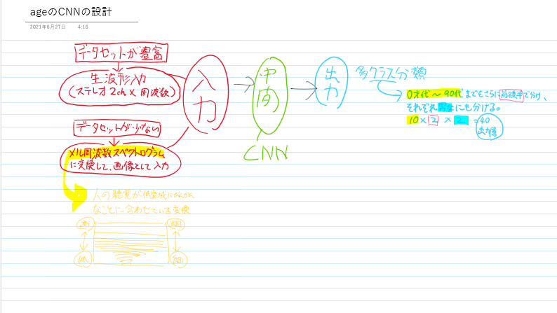
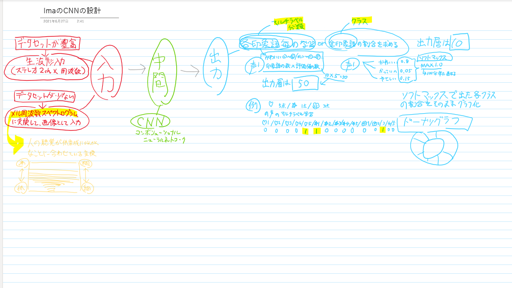
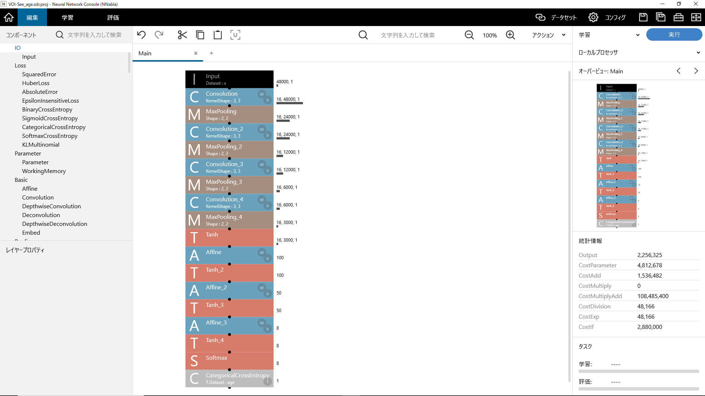
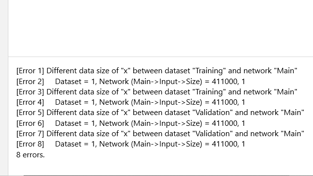

夏の進捗(2021/09/24)
●サンプル収集の進捗
現在、集まっているサンプルの内訳は…
女性→17才1名、21才8名、51才1名、52才1名、54才1名、81才1名。
男性→17才1名、21才1名、28才1名、44才1名、55才1名
計18名（前回比3名増）
●ノートPC、物理的破損
8月21日深夜、ノートPC の画面が割れ、何も出来ないほどバキバキになる(猫のすることなので許した)。
家に他のPC環境がないので、新しくデスクトップPC を注文。到着は9月15日。約一か月を無駄にしました。
●ニューラルネットワークの構成を考えておく
PCが無いので設計しても試せないのだが、PCがが届いたらすぐ試せるように、実践するニューラルネットワークの種類などを決めておいた。


●データセット探し
自主制作データセットのサンプル集めが難航しているため、年齢推定だけでも外部のデータセットが利用できないかともう一度探した。
やはり、音声データセットは自然言語処理向けのもの(声+テキストデータの組合せ)がほとんどで、日本人の声と年齢性別の組合せは意外と少ない。
見つけたのは以下。
●音声資源コンソーシアムの音声コーパスリスト→日本語のデータセットが多いので、いくつか組合せれば年齢推定には利用できるかも。
●Common voice→Mozillaが提供するパブリックドメインで各国言語の音声データセットを提供、収集するプロジェクト。データセットの提供だけでなく、サンプルの収集も行っているため、こちらのサービスについては別途紹介ページを作成予定。
※こちらのサービスでデータセットをダウンロード&解凍したところ、tsvファイルだったためNNCを利用する場合はcsvファイルに変換する必要あり、その際に少しデータがずれるので手作業で修正します。そちらも後日別途解説。
●NNC(Neural Network Console)を使ってみた
NNC(Neural Network Console)とは、Sonyが提供するGUIでディープラーニングによるAI開発を行えるソフトウェア。
クラウド版とWindows版の二種類がある。こちらのツールに関しては試用中かつ勉強中なので、もう少し理解が追いついたら紹介ページ作成します。
進捗としては、Windows版ダウンロード、データセットインポート、ニューラルネットワーク編集、そして学習実行したところでエラー吐いて止まるところまでです。
原因は、おそらく学習データのサイズとニューラルネットワーク上の入力ニューロンの数が一致していないのだと思われますが、NNCでの音声データの扱いが私自身認識のずれがあったため未解決です。
音声データにメル周波数フーリエ変換を施すのとRNN(Recurrent Neural Ｎetwork)での学習を試してみる予定(二週間以内)。
編集画面

今吐いてるエラー
